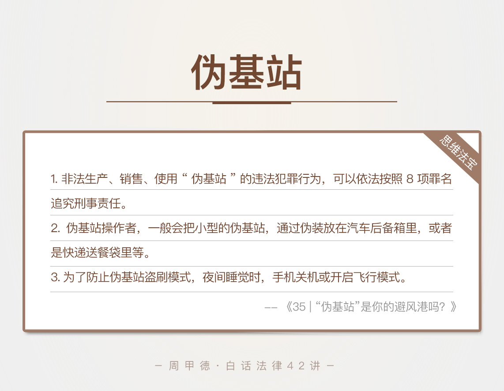

- 00 开篇词 这年头，你真应该懂点法律常识.md.html
- 01 “老周，我想知道” 常见法律认知盲区（一）.md.html
- 02 “老周，我想知道” 律师就在你身边（二）.md.html
- 03 “老周，我想知道” 律师就在你身边（三）.md.html
- 04 “老周，我想知道” 律师就在你身边（四）.md.html
- 05 创业未捷老板跑，社保工资哪里讨？.md.html
- 06 保密还是“卖身”，霸王条款怎么看？.md.html
- 07 编造流言蹭热度？看守所里降温度！.md.html
- 08 合同在手欠款难收，报警有用吗？.md.html
- 09 致创业：谁动了我的股权？.md.html
- 10 又见猝死！工“殇”究竟是不是工伤？.md.html
- 11 期权的“前世今生”.md.html
- 12 裁员面前，你能做的还有什么？.md.html
- 13 抄袭、盗图为什么做不得？.md.html
- 14 加班、工资、休假，你知道多少？.md.html
- 15 受贿原来这么“容易”.md.html
- 16 今天你用“VPN”了吗？.md.html
- 17 漏洞在眼前，可以悄悄破解吗？.md.html
- 18 “爬虫”真的合法吗？.md.html
- 19 非法集资到底是个啥？.md.html
- 20 黄色网站？不仅仅是“黄色”罪名.md.html
- 21 谁修改了我的积分资产？.md.html
- 22 外挂真能大吉大利吗？.md.html
- 23 如何看待“从删库到跑路”？.md.html
- 24 “伪基站”是你的避风港吗？.md.html
- 25 “网络诈骗”真的离你很远吗？.md.html
- 26 智斗中介：“北上广”租房图鉴.md.html
- 27 买买买！买房的“避坑”指南.md.html
- 28 闪婚又闪离，彩礼怎么理？.md.html
- 29 离婚还想和平？你要这么做.md.html
- 30 遗产继承的爱恨情仇.md.html
- 31 骗术升级？假结婚、假离婚的那些事儿.md.html
- 32 孩子学校受伤，谁之过？.md.html
- 33 如何让欠债还钱真正“天经地义”？.md.html
- 34 从透支到盗刷：人人须知的银行卡纠纷.md.html
- 35 远离“套路贷”的套路大全.md.html
- 36 危险！酒驾为什么被罚那么重？.md.html
- 37 老人倒地，“扶”“不服”？.md.html
- 38 “能动手就别吵吵”，代价你真的知道吗？.md.html
- 39 发生交通事故，如何处理？.md.html
- 40 交通事故综合法宝.md.html
- 41 婚姻家庭综合法宝.md.html
- 42 买卖房屋综合法宝.md.html
- 一键直达 法律专栏“食用”指南.md.html
- 加餐 “新冠肺炎”影响下，17个常见法律问题解答.md.html
- 结束语 法律，不会终止的篇章.md.html
- 捐赠
24 “伪基站”是你的避风港吗？
提到“伪基站”，有的人可能还比较陌生，但是说起伪基站干的那些事儿，估计就没人不知道了。
比如说，开车多年的老司机们，最熟悉的，应该就是车里的广播吧，要说最讨厌的，那一定就是在某个地段碰上“黑广播”了。黑广播，一般就是因为这些地方放了伪基站。
再比如说，我们更熟悉的，手机上的垃圾短信，你一定也见过不少。什么某某淘宝商家的广告，银行的账款通知，航班取消通知或者中奖通知等等，这些大多也是靠伪基站，进行诈骗和骚扰。
光说伪基站做了些什么，你可能还会觉得，唉，挺有用啊，可以用来致富发家啊！但是，要知道了伪基站的法律严重性，这念头就一定会打消了。
举个例子，前两年，我就曾办理过这么一起案件。年轻人小秦在京务工，先后换过几份工作，可都没能满足他赚大钱的心愿。后来，经过狐朋狗友的介绍，小秦听说了搞伪基站项目赚钱来得快，就入手了一台。
小秦主要通过QQ群来接业务，然后活跃在四环五环的大街小巷里，背个基站骑个电动车到处跑，帮雇主发送“交通银行银行卡升级”等信息。日赚数千元，确实收入不菲。
不过，因为每天都有不少人上当受骗报案，警方也注意到了此事。北京公安成立了专案小组，抓到了小秦，并在小秦的帮助下，抓捕了远在福建的雇主犯罪团伙。
其实，直到此时，小秦也还是懵懵懂懂的，他觉得自己只是用伪基站、发了点假消息，竟然会有这么严重的后果？
要说起这伪基站的罪行，估计能说个一天一夜都停不下来。今天，我们主要先来看看，法律上，使用伪基站要承担什么后果。
法律知识
首先你可以简单了解下，基站是什么。我们不需要深究，在通信领域中，基站的具体技术实现。从生活角度来看，基站本身有收发移动信号的功能，我们手机接打电话、收发短信，都要借助附近的某个基站的数据交换来实现。
基站本身必须通过批准，才能设立运营。伪基站，顾名思义，伪造隐蔽的基站，说白了就是一种非法的无线电通信设备，既没有取得“电信设备进网许可”，也没有获得“无线电发射设备型号核准”。
作为基站的虚假仿制品，伪基站有搜取附近手机信息的功能，还能强行向一定范围内的不特定用户手机发送短信。这个过程，会屏蔽正常基站的信号，非法占用公众正常的移动通信频率，局部阻断移动通信的网络信号。
在2014年3月14日前，我国对设立“伪基站”、发送垃圾短信的行为，惩处的力度还不够。那会儿，我们只能按照，无线电管理条例中的“擅自设置、使用无线电台(站)”，这一条例来处理，而惩罚措施，也只有查封或没收设备、没收非法收入。
只有那些情节严重的，才会有1000元以上、5000元以下的罚款。而那些利用“伪基站”犯罪的，也只有实施了确定的诈骗或是其他犯罪行为，才能以诈骗或其他犯罪的名义，进行刑事处罚。
但事实上，非法生产、销售、使用“伪基站”设备，破坏的自然不仅仅是电信秩序。这不但会影响电信运营商的正常经营，严重扰乱市场秩序，也会危害通信安全和公共安全。
哪怕对我们普通用户来说，也是不小的灾难。谁愿意看到一堆垃圾短信啊，一不小心点进去，甚至还有病毒危害。如果你家里有老人和小孩的话，一定对此感受更深。可以说，手机的正常使用，个人的财产权益，个人隐私利益，都受到了极大威胁，简直就是社会毒瘤。
所以，2014年3月14日，最高人民法院、最高人民检察院、公安部、国家安全部，联合出台了《关于依法办理非法生产销售使用“伪基站”设备案件的意见》。
这个文件中，明确了非常重要的一点：非法生产、销售、使用“伪基站”的违法犯罪行为，可以依法按照8项罪名追究刑事责任。这8项罪名分别是：
非法经营罪；
破坏公用电信设施罪；
诈骗罪；
虚假广告罪；
非法获取公民个人信息罪；
破坏计算机信息系统罪；
扰乱无线电通讯管理秩序罪；
非法生产销售间谍专用器材罪。
至此，伪基站的犯罪后果，明显严重了很多。我们也就不难理解小秦被抓这件事了。
情景分析
小秦最后一共赚了12万元，并用“伪基站”发布了大量的银行卡诈骗信息。如果说刚接触这行没多久，可能会原谅你不知道这事的真正后果。但是，从小秦做这事儿的时间来看，应该已经明知道是诈骗信息。
这种行为，显然已经触犯到了非法经营罪、破坏公用电信设施罪和诈骗罪等多个罪名，最终，法院也是以诈骗罪的名义，对小秦进行了处罚。
其实，对伪基站的犯罪打击都是极其困难的。
首先，是犯罪模式的问题。通常，伪基站操作者和真正实施诈骗的犯罪份子，并不是同一伙人，伪基站操作者，一般都是通过网上联系，按雇主要求发布信息就可以，然后按日收取劳务费。他们不管信息内容和种类，给钱就发，也不了解雇主是谁，就给抓捕造成了很大的麻烦。
其次，是犯罪手法的问题。伪基站操作者，一般会把小型的伪基站，通过伪装放在汽车后备箱，或者是快递送餐袋里等，不是专业人员、专业手段，还真是难以识别。
他们一旦被查到，就会迅速销毁机器内的数据。这样，除非用专业技术手段来恢复相关数据，不然的话，连罪证都找不着。不过，恢复手段始终比不上原始数据，这就导致犯罪份子受到的惩罚和实际罪行很难匹配，
雇主更是难查找的存在。他们提供给伪基站操作者的信息，不管是身份信息、手机号还是银行卡信息，一般都是盗用别人的假信息，还经常打一枪换一跑。即使被查获，也是死不认账。司法机关也只能通过查到的证据，来定罪处罚。
思维法宝
伪基站这么一个危险的存在，我们还是离得越远越好。当然，除了自己不要参与这样的活动，日常的防刷防盗意识，也是必不可少。
这两年新流行的一种无链接盗刷方式，正是通过伪基站进行的“盗刷四部曲”。先用伪基站获取手机号、然后GSM 短信嗅探、继续获取你的其他隐私信息、最后进行盗刷。全程不需要你的任何动作，悄无声息就盗走你的钱。

前段时间，身边不少人都反应说，经常收到来自某APP的莫名其妙的验证码，这基本也是个危险信号了。对此，我建议，生活中我们尽量做到这么几点。
第一，夜间睡觉时，手机关机或开启飞行模式。因为深夜是这类犯罪分子的犯罪高峰期，趁着人们入眠，悄无声息转走你的钱。所以，关机或飞行来保护自己的手机。
第二，不管白天还是晚上，只要收到来历不明的验证码，同样立刻关机或者飞行，最好能移动一下你的位置，远离伪基站的覆盖区。
第三，如果突然收到的是，银行发来的验证码，立刻联系银行进行风险处置。如果是支付宝这类大平台的验证码，也建议联系工作人员咨询清楚。
第四，也是我们老生常谈的一个手段，尽可能关闭免密支付的功能，同时降低你设置的每日最高消费额度。有些软件可能会默认开启免密支付，一定记得检查清楚并且关闭。
今天的内容主要就是这些。关于伪基站，或者防盗刷的手段，你有什么疑惑或者相关经验吗？欢迎留言和我分享，也欢迎你把这篇文章分享给你的亲朋好友。伪基站不能成为任何犯罪的避风港。
© 2019 - 2023 Liangliang Lee. Powered by gin and hexo-theme-book.